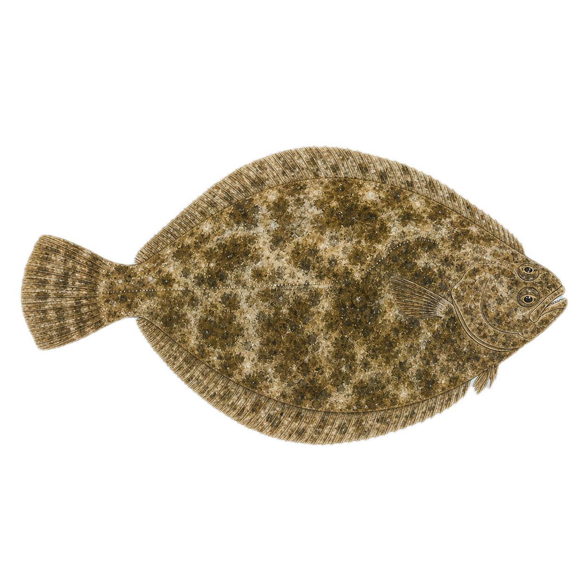
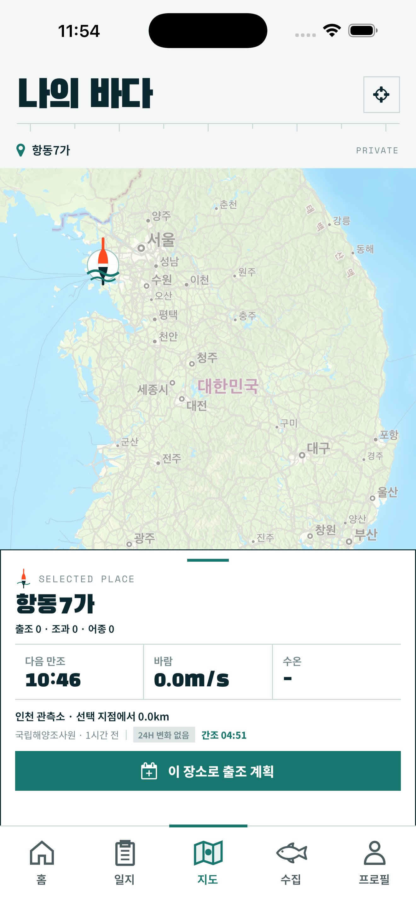
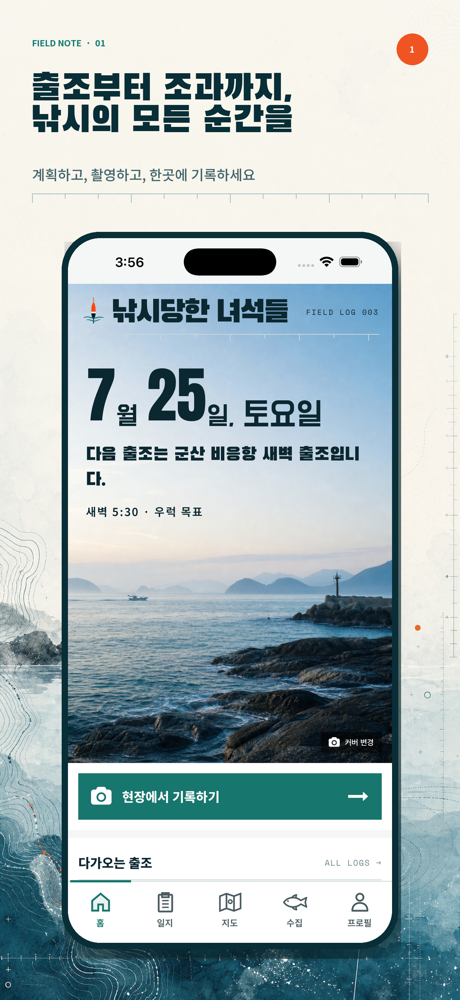
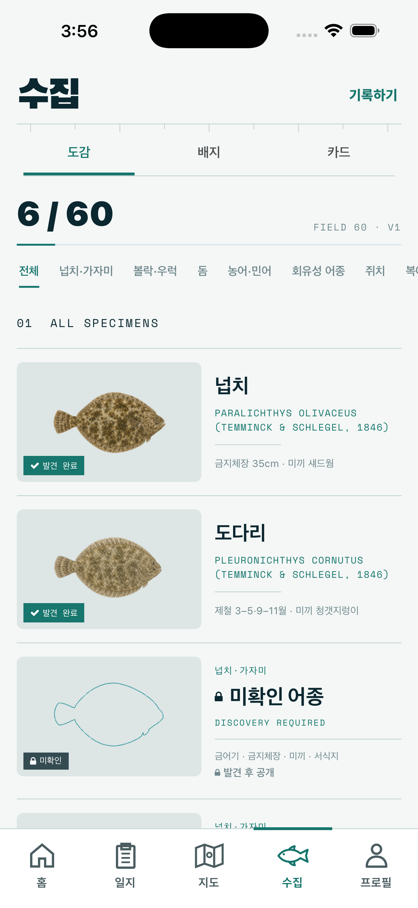

01
사진으로 어종 확인
잡은 물고기를 촬영하면
AI가 어종 후보를 찾아드려요.
FIELD SPECIMEN · 01

사진 한 장으로 어종 후보를 확인하고, 조과를 기록해
나만의 바다 도감을 완성하세요.
기록은 가볍게. 추억은 오래.

출조부터 기록, 수집까지.
바다에서 생긴 모든 순간이 나만의 도감이 됩니다.
잡은 물고기를 촬영하면
AI가 어종 후보를 찾아드려요.


날짜, 장소, 크기를 남겨
그날의 바다를 오래 기억하세요.

잡은 어종이 하나씩 열리며
나만의 도감이 채워집니다.
오늘의 바다를 기록하고, 나만의 60종 도감을 채워보세요.